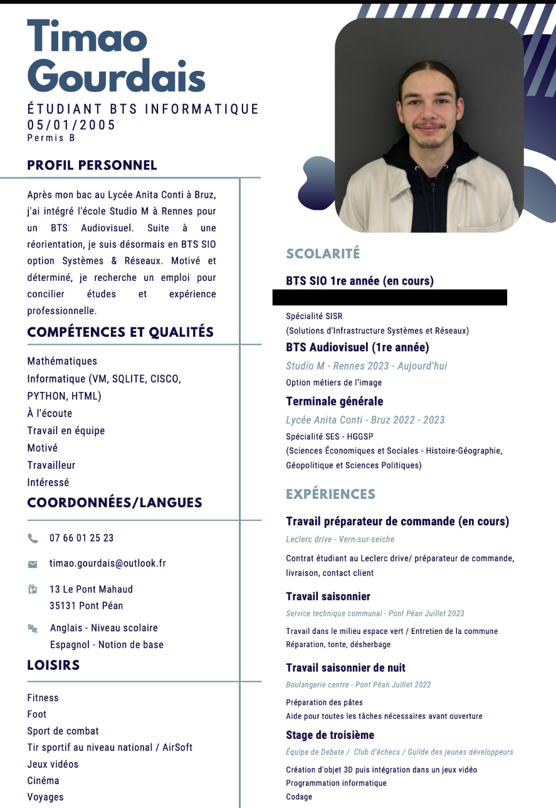

Timao Gourdais
Étudiant BTS SIO | Futur Administrateur Systèmes & Réseaux
Voir mon LinkedIn
Étudiant BTS SIO | Futur Administrateur Systèmes & Réseaux
Voir mon LinkedInJe suis étudiant en BTS SIO option SISR et je travaille actuellement chez What's Cooking en support informatique. Je développe mes compétences en administration systèmes, virtualisation, réseau Cisco, supervision et cybersécurité. Passionné par les nouvelles technologies, je réalise aussi des projets personnels comme des labs virtualisés, des dashboards de supervision et des projets DevOps.
Mon objectif est de devenir Administrateur Systèmes et Réseaux puis évoluer vers des rôles DevOps ou ingénieur infrastructure.
🎵 Musique : Production FL Studio, écoute hip-hop / électro, sound design.
🎸 Guitare : apprentissage des solos rock et metal, improvisation pentatonique.
🎮 Jeux vidéo : stratégie, MMO, jeux compétitifs et création de projets gaming.
💻 Informatique : homelab, virtualisation Hyper-V, Docker, monitoring Grafana.
🚀 Création : développement de projets, idées business tech et game design.
Voici mon CV professionnel :
